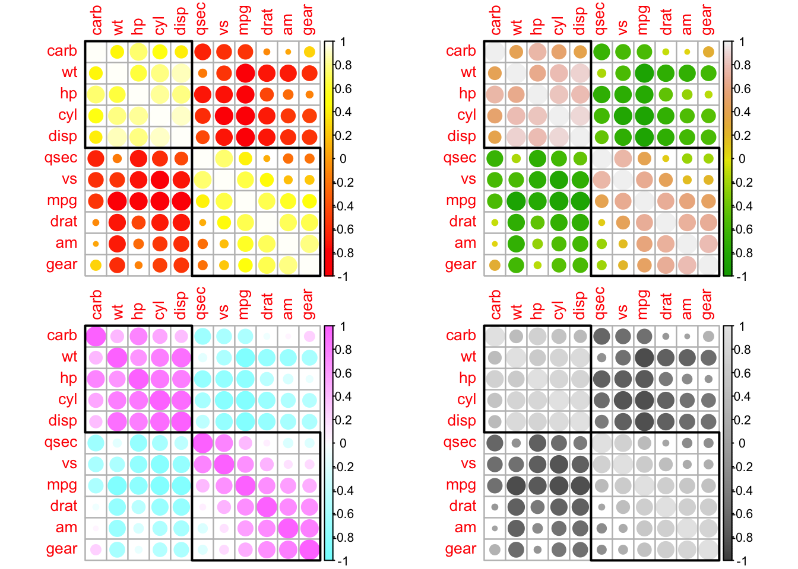
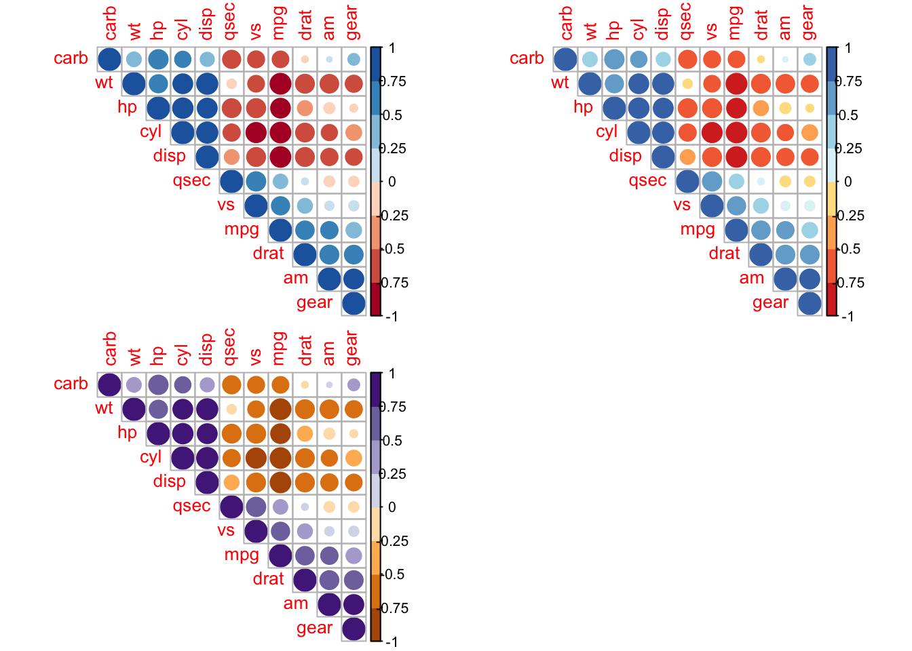

相关矩阵图二—–corrplot
corrplot::corrplot()函数
由于corrgram::corrgram()函数没有显示相关性的大小度量关系，于是经常用corrplot::corrplot()函数来画相关矩阵图，不过此图的缺点是title画出来不好看
corrplot(corr,
method = c("circle", "square", "ellipse", "number", "shade","color", "pie"),
type = c("full", "lower", "upper"), add = FALSE,
col = NULL, bg = "white", title = "", is.corr = TRUE, diag = TRUE,
outline = FALSE, mar = c(0, 0, 0, 0), addgrid.col = NULL,
addCoef.col = NULL, addCoefasPercent = FALSE, order = c("original",
"AOE", "FPC", "hclust", "alphabet"), hclust.method = c("complete", "ward",
"ward.D", "ward.D2", "single", "average", "mcquitty", "median", "centroid"),
addrect = NULL, rect.col = "black", rect.lwd = 2, tl.pos = NULL,
tl.cex = 1, tl.col = "red", tl.offset = 0.4, tl.srt = 90,
cl.pos = NULL, cl.lim = NULL, cl.length = NULL, cl.cex = 0.8,
cl.ratio = 0.15, cl.align.text = "c", cl.offset = 0.5, number.cex = 1,
number.font = 2, number.digits = NULL, addshade = c("negative",
"positive", "all"), shade.lwd = 1, shade.col = "white", p.mat = NULL,
sig.level = 0.05, insig = c("pch", "p-value", "blank", "n", "label_sig"),
pch = 4, pch.col = "black", pch.cex = 3, plotCI = c("n", "square",
"circle", "rect"), lowCI.mat = NULL, uppCI.mat = NULL, na.label = "?",
na.label.col = "black", win.asp = 1, ...)
参数解释：
corr： 用于绘图的矩阵，必须是正方形矩阵(即相关系数矩阵)，如果是普通的矩阵，需要设置is.corr=FALSE
method：可以是circle(圆形,默认),square(方形),ellipse(椭圆形),number(数值),shade(阴影),color(颜色),pie(饼图)。
type：用于设置相关矩阵图的显示区域：full(全部，默认), lower(下三角), upper(上三角)。
col：指定图形展示的颜色，默认以均匀的颜色展示，可以通过colorRampPalette函数向col参数赋值来设置颜色。
bg：指定图的背景色
title：为图形添加标题
diag：是否展示对角线上的结果，默认为TRUE
outline：是否绘制圆形、方形或椭圆形的轮廓，默认为FALSE
mar：具体设置图形的四边间距
addgrid.col：当选择的方法为颜色或阴影时，默认的网格线颜色为白色，否则为灰色
addCoef.col：为相关系数添加颜色，默认不添加相关系数，只有方法为number时，该参数才起作用
addCoefasPercent：为节省绘图空间，是否将相关系数转换为百分比格式，默认为FALSE
order：指定相关系数排序的方法，一般”AOE”排序结果都比”FPC”要好
可以是：original(原始顺序)、AOE(特征向量角序)、FPC(第一主成分顺序)、hclust(层次聚类顺序)和alphabet(字母顺序)
hclust.method：当order为hclust时，该参数可以是层次聚类中ward法、最大距离法等7种之一
addrect：当order为hclust时，可以为添加相关系数图添加矩形框，默认不添加框，如果想添加框时，只需为该参数指定一个整数即可
rect.col：指定矩形框的颜色
rect.lwd：指定矩形框的线宽
tl.pos：指定文本标签(变量名称)的位置，字符型参数为："lt", "ld", "td", "d" or "n"
当type=full时，默认标签位置在左边和顶部(lt)，
当type=lower时，默认标签在左边和对角线(ld)，
当type=upper时，默认标签在顶部和对角线， d表示diagonal(对角线)， n表示不添加文本标签
tl.cex：指定文本标签的大小
tl.col：指定文本标签的颜色
cl.pos：图例（颜色条）位置，
当type=upper或full时，图例在右表(r)，
当type=lower时，图例在底部，
不需要图例时，只需指定该参数为n
addshade：只有当method=shade时，该参数才有用，
参数值可以是negtive/positive和all，分表表示对负相关系数、正相关系数和所有相关系数添加阴影。
注意：正相关系数的阴影是45度，负相关系数的阴影是135度
shade.lwd：指定阴影的线宽
shade.col：指定阴影线的颜色
参数 cl.* 用于设置图例的颜色（图例的色条），tl.* 用于设置图例的文本(标量名称)。
对于文本标签，这两个函数 tl.col（文本标签颜色）和tl.srt（文本标签字符串旋转）用于更改文本颜色和旋转。使用不同的method绘制相关矩阵图
设置布局类型（参数type）：
type = c(“full”, “lower”, “upper”)
corrplot.mixed() 是一个混合可视化风格的包装函数。
代码
相关矩阵重排序
代码
代码
corrplot(M, order = "hclust", addrect = 2)
corrplot(M, order = "hclust", addrect = 3)代码
使用不同的色谱
代码
# 如上一节所示，可以定制相关图的颜色。该功能colorRampPalette()非常便于产生色谱。
col1 <- colorRampPalette(c("#7F0000", "red", "#FF7F00", "yellow", "white",
"cyan", "#007FFF", "blue", "#00007F"))
col2 <- colorRampPalette(c("#67001F", "#B2182B", "#D6604D", "#F4A582",
"#FDDBC7", "#FFFFFF", "#D1E5F0", "#92C5DE",
"#4393C3", "#2166AC", "#053061"))
col3 <- colorRampPalette(c("red", "white", "blue"))
col4 <- colorRampPalette(c("#7F0000", "red", "#FF7F00", "yellow", "#7FFF7F",
"cyan", "#007FFF", "blue", "#00007F"))
whiteblack <- c("white", "black")
## using these color spectra
par(mfrow=c(2,2))
corrplot(M, order = "hclust", addrect = 2, col = col1(100))
corrplot(M, order = "hclust", addrect = 2, col = col2(50))
corrplot(M, order = "hclust", addrect = 2, col = col3(20))
corrplot(M, order = "hclust", addrect = 2, col = col4(10))代码
### 使用调色板包
# 您也可以使用标准调色板（包grDevices）
par(mfrow=c(2,2))
corrplot(M, order = "hclust", addrect = 2, col = heat.colors(100))
corrplot(M, order = "hclust", addrect = 2, col = terrain.colors(100))
corrplot(M, order = "hclust", addrect = 2, col = cm.colors(100))
corrplot(M, order = "hclust", addrect = 2, col = gray.colors(100))
代码
### 使用调色板包---使用RcolorBrewer包。
library(RColorBrewer)
corrplot(M, type = "upper", order = "hclust",col = brewer.pal(n = 8, name = "RdBu"))
corrplot(M, type = "upper", order = "hclust",col = brewer.pal(n = 8, name = "RdYlBu"))
corrplot(M, type = "upper", order = "hclust",col = brewer.pal(n = 8, name = "PuOr"))
更改文本标签和图例的颜色和旋转
参数 cl.* 用于设置图例的颜色，tl.* 用于设置图例的文本。
对于文本标签，这两个函数tl.col（文本标签颜色）和tl.srt（文本标签字符串旋转）用于更改文本颜色和旋转。
代码
par(mfrow=c(2,2))
## remove color legend and text legend 移除图例的颜色部分和文字标签部分
corrplot(M, order = "AOE", cl.pos = "n", tl.pos = "n")
## bottom color legend, diagonal text legend, rotate text label
## 图底图例，对角线文字图例，旋转文字标签
corrplot(M, order = "AOE", cl.pos = "b", tl.pos = "d", tl.srt = 60)
## a wider color legend with numbers right aligned
corrplot(M, order = "AOE", cl.ratio = 0.2, cl.align = "r")
## text labels rotated 45 degrees
corrplot(M, type = "lower", order = "hclust", tl.col = "black", tl.srt = 45)处理非相关矩阵
代码
par(mfrow=c(2,2))
corrplot(abs(M),order = "AOE", col = col3(200), cl.lim = c(0, 1))
## visualize a matrix in [-100, 100]
ran <- round(matrix(runif(225, -100,100), 15))
corrplot(ran, is.corr = FALSE, method = "square")
## a beautiful color legend
corrplot(ran, is.corr = FALSE, method = "ellipse", cl.lim = c(-100, 100))
#如果矩阵是矩形，则可以使用win.asp参数调整纵横比， 以使矩阵呈现为正方形。
ran <- matrix(rnorm(70), ncol = 7)
corrplot(ran, is.corr = FALSE, win.asp = .7, method = "circle")处理缺失（NA）值
默认情况下，corrplot将NA值呈现为”?“字符。使用na.label 参数，可以使用不同的值（最多支持两个字符）。
在标签中使用"plotmath"表达式
从版本开始0.78，可以 在变量名中使用plotmath表达式。要激活plotmath渲染，请在标签前加上一个字符":"，"="or "$"。
将相关图与显着性检验相结合
代码
res1 <- cor.mtest(mtcars, conf.level = .95)
res2 <- cor.mtest(mtcars, conf.level = .99)
par(mfrow=c(1,3))
## specialized the insignificant value according to the significant level
corrplot(M, p.mat = res1$p, sig.level = .2)
corrplot(M, p.mat = res1$p, sig.level = .05)
corrplot(M, p.mat = res1$p, sig.level = .01)代码
## leave blank on no significant coefficient
corrplot(M, p.mat = res1$p, insig = "blank")
## add p-values on no significant coefficient
corrplot(M, p.mat = res1$p, insig = "p-value")
## add all p-values
corrplot(M, p.mat = res1$p, insig = "p-value", sig.level = -1)代码

可视化置信区间
代码
par(mfrow=c(3,2))
corrplot(M, low = res1$lowCI, upp = res1$uppCI, order = "hclust",
rect.col = "navy", plotC = "rect", cl.pos = "n")
corrplot(M, p.mat = res1$p, low = res1$lowCI, upp = res1$uppCI,
order = "hclust", pch.col = "red", sig.level = 0.01,
addrect = 3, rect.col = "navy", plotC = "rect", cl.pos = "n")
res1 <- cor.mtest(mtcars, conf.level = .95)
corrplot(M, p.mat = res1$p, insig = "label_sig",
sig.level = c(.001, .01, .05), pch.cex = .9, pch.col = "white")
corrplot(M, p.mat = res1$p, method = "color",
insig = "label_sig", pch.col = "white")
corrplot(M, p.mat = res1$p, method = "color", type = "upper",
sig.level = c(.001, .01, .05), pch.cex = .9,
insig = "label_sig", pch.col = "white", order = "AOE")
corrplot(M, p.mat = res1$p, insig = "label_sig", pch.col = "white",
pch = "p<.05", pch.cex = .5, order = "AOE")自定义相关图
略
参考： https://cran.r-project.org/web/packages/corrplot/vignettes/corrplot-intro.html
代码
sessionInfo()
#> R version 4.2.1 (2022-06-23)
#> Platform: aarch64-apple-darwin20 (64-bit)
#> Running under: macOS Monterey 12.5.1
#>
#> Matrix products: default
#> BLAS: /Library/Frameworks/R.framework/Versions/4.2-arm64/Resources/lib/libRblas.0.dylib
#> LAPACK: /Library/Frameworks/R.framework/Versions/4.2-arm64/Resources/lib/libRlapack.dylib
#>
#> locale:
#> [1] en_US.UTF-8/en_US.UTF-8/en_US.UTF-8/C/en_US.UTF-8/en_US.UTF-8
#>
#> attached base packages:
#> [1] stats graphics grDevices utils datasets methods base
#>
#> other attached packages:
#> [1] RColorBrewer_1.1-3 corrplot_0.92
#>
#> loaded via a namespace (and not attached):
#> [1] digest_0.6.29 jsonlite_1.8.0 magrittr_2.0.3 evaluate_0.16
#> [5] rlang_1.0.4 stringi_1.7.8 cli_3.3.0 rstudioapi_0.14
#> [9] rmarkdown_2.16.1 tools_4.2.1 stringr_1.4.1 htmlwidgets_1.5.4
#> [13] xfun_0.32 yaml_2.3.5 fastmap_1.1.0 compiler_4.2.1
#> [17] htmltools_0.5.3 knitr_1.40